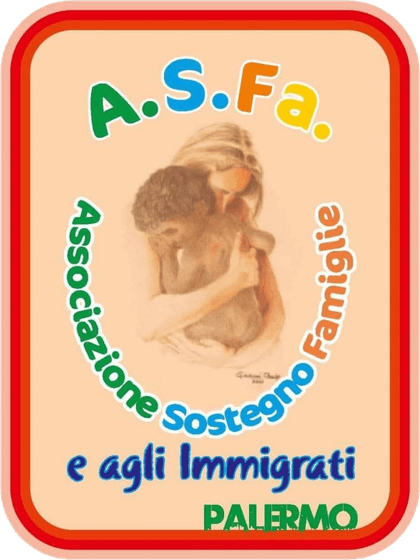
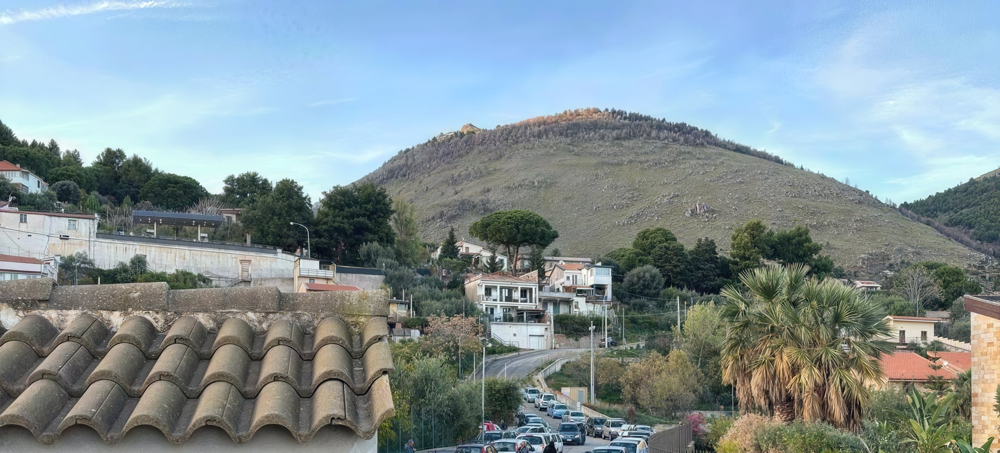

Il pacco alimentare
Pasta, latte, olio, legumi, tonno, carne in scatola, riso. Arriva in gran parte dal Banco delle Opere di Carità della Sicilia Occidentale, che ci rifornisce gratuitamente, e da raccolte e donazioni.

A.S.FA. Sicilia Associazione di Sostegno alle Famiglie
Palermo e Monreale · dal 2012
Siamo un'organizzazione di volontariato che sostiene le famiglie in difficoltà di Palermo e Monreale: cibo, abiti, visite mediche gratuite e qualcuno che ascolta. La nostra sede di Monreale è una villa confiscata alla mafia.
«Piccoli gesti concreti. Fatti e non parole.»Cav. Diego Mannisi, presidente
Il tabellone
Non facciamo una fila sola per tutti. La settimana è divisa, perché chi arriva in carrozzina non debba aspettare in piedi dietro a cinquanta persone. Il giorno di oggi è acceso.
A Palermo, in Via Marinuzzi, si distribuisce nei giorni che annunciamo: li trovi nelle ultime notizie.
Il modo più semplice di aiutarci
Nella dichiarazione dei redditi, nel riquadro «Sostegno degli enti del Terzo settore iscritti nel RUNTS», metti una firma e scrivi il nostro codice fiscale. Non è una tassa in più: è una quota che lo Stato destina comunque a qualcuno. Puoi decidere che sia a noi.
Nel 2025 1.274 persone hanno scritto questo numero sulla loro dichiarazione. Sono diventati 26.727 euro — la voce più grande del nostro bilancio.
Codice fiscale
97270000827
A.S.FA. Sicilia ODV · iscritta al RUNTS al n. 125129
La frase che sta sul nostro striscione
«Il dopo di noi» è la domanda che tiene sveglio un genitore che ha un figlio fragile: chi ci sarà quando io non ci sarò più? Non abbiamo una risposta facile. Abbiamo un indirizzo, dei giorni fissi e quattordici volontari che ci sono anche la settimana prossima.
Quattro cose
Pasta, latte, olio, legumi, tonno, carne in scatola, riso. Arriva in gran parte dal Banco delle Opere di Carità della Sicilia Occidentale, che ci rifornisce gratuitamente, e da raccolte e donazioni.
Raccogliamo e ridistribuiamo abiti usati in buono stato e generi di prima necessità. È la parte meno raccontata del nostro lavoro e una delle più richieste.
Cardiologia, diabetologia, medicina interna, oculistica, dermatologia, odontoiatria. Con l'ASP di Palermo, dentro il Programma Nazionale Equità nella Salute 2021-2027 contro la povertà sanitaria. Per chi ha un ISEE entro i 10.000 euro.
Sul nostro striscione c'è scritto «sportello ascolto». Non è un modo di dire: mercoledì e venerdì c'è qualcuno che sta seduto lì per capire di cosa hai bisogno e come si fa una pratica.
Via Favara 6, Monreale
Non è un dettaglio che teniamo nascosto: sta scritto sul nostro striscione e su una targa del Comune all'ingresso.
L'Agenzia nazionale per i beni confiscati consegna al Comune di Monreale due ville già di Giuseppe Caramazza, con il vincolo di destinarle a finalità sociali.
Il Comune pubblica il bando rivolto ad associazioni, cooperative sociali ed enti di volontariato.
Il 30 marzo il bene viene assegnato ad A.S.FA. L'8 settembre benedicono il sito l'arcivescovo di Monreale Michele Pennisi e mons. Santo Marcianò, Ordinario militare per l'Italia: il vescovo che guida i cappellani di Esercito, Marina, Aeronautica, Carabinieri e Guardia di Finanza.
Il 29 febbraio la sede viene intitolata all'avvocato Enzo Fragalà, ucciso a Palermo nel 2010 dopo un pestaggio di matrice mafiosa. Alla cerimonia ci sono la moglie, la professoressa Silvana Friscia, familiare di una vittima del dovere dell'Arma dei Carabinieri, e la figlia, l'avvocato Marzia Fragalà.
Partono i lavori di riqualificazione finanziati dal GAL Terre Normanne con fondi europei per lo sviluppo rurale: la villa diventa un centro culturale e sociale.
Il centro culturale e sociale e il punto di informazione turistica sono realizzati e attivi. Nell'aula intitolata a Fragalà si tengono convegni e si parla di legalità. Fuori, il lunedì e il martedì, c'è la fila.
Due indirizzi
Via Favara 6
90046 Monreale (PA)
Bene confiscato alla mafia
È qui che si distribuisce, il lunedì e il martedì, e che c'è lo sportello.
Apri in Google MapsVia Antonio Marinuzzi 61
90127 Palermo
Nei giorni annunciati
Qui si fanno le distribuzioni di Palermo e le prenotazioni delle visite mediche, nei giorni che annunciamo su Facebook. La sede legale, con cui l'associazione è iscritta al RUNTS, è in Via Filippo Corazza 20/B.
Apri in Google MapsSostienici
Non abbiamo dipendenti: nessuno di noi prende uno stipendio. Quello che arriva diventa cibo, carburante per i ritiri e le spese della sede.
IT95 U030 6909 6061 0000 0071 463
Causale: «Erogazione liberale». Intestato ad A.S.FA. Sicilia ODV – Associazione di Sostegno alle Famiglie.
Intesa Sanpaolo · BIC BCITITMM
C.F. 97270000827
Non costa nulla. Riquadro «Sostegno degli enti del Terzo settore iscritti nel RUNTS».
Alimenti non deperibili e abiti in buono stato si consegnano direttamente in sede a Monreale, negli orari di apertura.
Le donazioni alle organizzazioni di volontariato sono detraibili al 35% o deducibili, secondo l'art. 83 del Codice del Terzo settore (D.Lgs. 117/2017).
In chiaro
Non siamo una grande fondazione e non ci piace sembrarlo. Questi sono i numeri veri, con l'anno a cui si riferiscono.
Importi assegnati dall'Agenzia delle Entrate. Sono dati pubblici e chiunque può verificarli.
Il salto del 2025 è tutto qui: da 226 a 1.274 firme.
Chi guida l'associazione
Scheda biografica del presidente · aggiornata a settembre 2026
Diego Mannisi, nato a Palermo, è il fondatore e il presidente di A.S.FA. Sicilia ODV, l'associazione di volontariato che dal 2012 sostiene le famiglie in difficoltà e gli immigrati di Palermo e di Monreale. È Cavaliere dell'Ordine al Merito della Repubblica Italiana.[1]
Nel 2012 fonda a Palermo l'Associazione di Sostegno alle Famiglie e agli Immigrati, oggi iscritta al Registro unico del Terzo settore come A.S.FA. Sicilia ODV. Nel 2018, con un bando pubblico del Comune di Monreale, ottiene per l'associazione una villa confiscata alla mafia, che da allora ne è la sede operativa.[2]
Guida quattordici volontari, nessuno dei quali prende uno stipendio. Con loro organizza la distribuzione dei pacchi alimentari, che oggi raggiunge 936 famiglie a Monreale e 920 a Palermo, e lo sportello di ascolto. Scrive di persona gli avvisi di ogni distribuzione e li firma «Cav. Diego Mannisi».
Ospita nelle sedi dell'associazione il personale dell'ASP di Palermo per il Programma Nazionale Equità nella Salute: prenotazioni e visite mediche gratuite per chi ha un ISEE entro i 10.000 euro, italiani e stranieri. «È un interesse di tutti aiutare chi ha bisogno», ha scritto nel settembre 2026.[3]
Presiede l'articolazione di ANAS, l'Associazione Nazionale di Azione Sociale, intitolata all'avvocato Enzo Fragalà, vittima di mafia: una sezione nata nel 2016 d'intesa con la famiglia.[4] Nel 2020 la sede di Monreale viene intitolata a Fragalà. Da quindici anni partecipa con le sue associazioni al Memorial Salvo D'Acquisto, che unisce legalità e sport, e le associazioni che guida fanno parte del COV Sicilia, il coordinamento dei volontari.[3]
Dare una mano
Il lunedì e il martedì bisogna scaricare, dividere, chiamare i nomi, riempire i moduli. Siamo in quattordici e le famiglie sono più di 1.800: due ore del tuo pomeriggio si sentono davvero.
Non serve nessuna competenza particolare, e non serve impegnarsi tutte le settimane. Basta presentarsi allo sportello o scrivere.
ScriviciLe notizie
Le date delle distribuzioni, le prenotazioni delle visite mediche, le iniziative: le pubblichiamo sulla nostra pagina Facebook, e qui accanto le vedi appena escono.
Nel gruppo «ASFA Palermo e Monreale – Diego Mannisi» siamo più di 900.
Parlaci